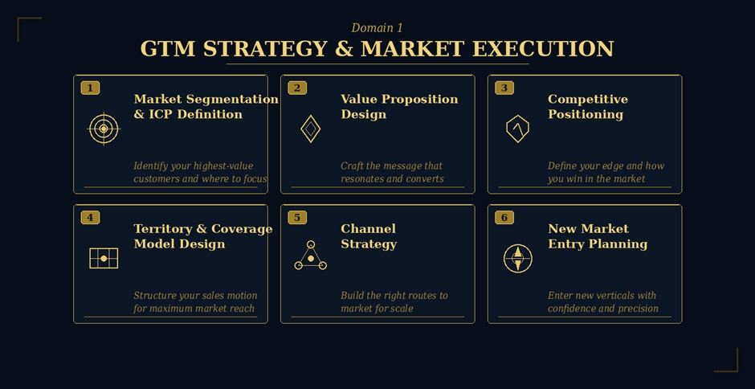
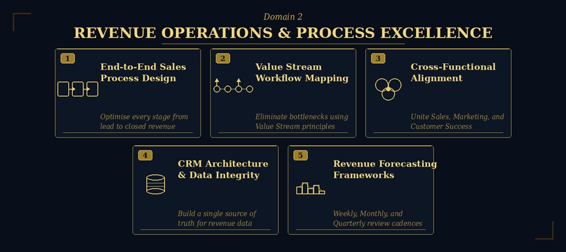
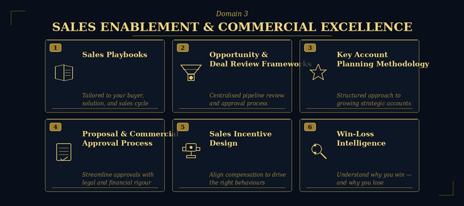
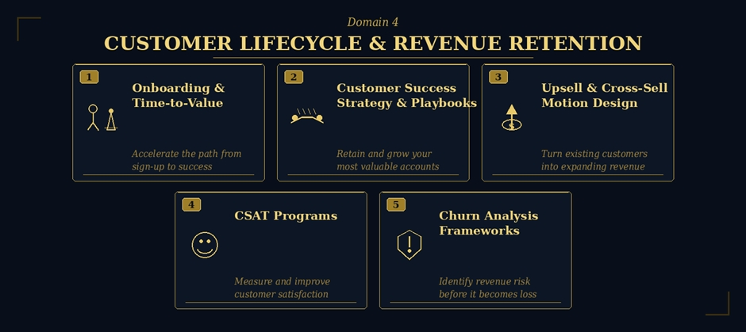
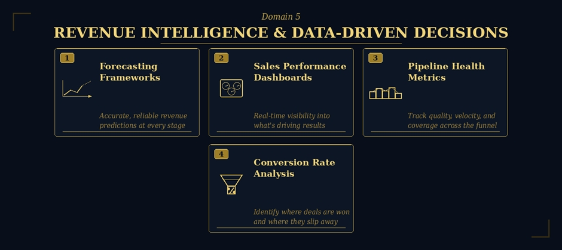
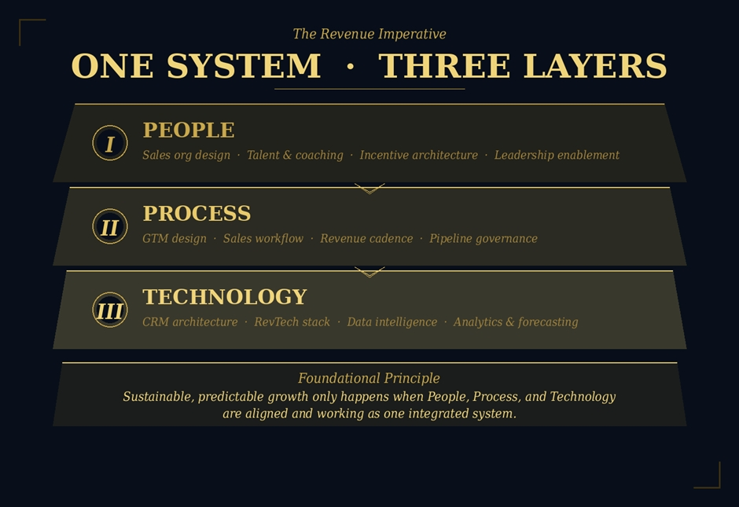

Most B2B SaaS, AI SaaS, IT Services, Fintech, and Life Sciences companies stall because their revenue engine is misaligned, their GTM motion is reactive, and their commercial teams operate without a shared system.
The symptoms are familiar: pipelines that look healthy but don't convert. Sales cycles that drag. Marketing and sales teams pulling in different directions. Forecasts that miss. Customers who churn before they expand.
Build a deliberate, repeatable path to market
Most technology companies don't have a sales problem — they have a GTM problem. Markets are entered reactively and segments are poorly defined. Messaging doesn't land with the right buyers. Sales and marketing execute independently rather than in concert. We design and activate GTM strategies that are built for your specific market, buyer, and growth stage. This includes:

Whether you are a $3M SaaS company entering enterprise for the first time, an AI-native startup building your first scalable GTM motion, or an IT services firm repositioning for growth — we bring the structure, discipline, and execution expertise to make market entry.
Turn your revenue function into a system, not a scramble
Revenue Operations is the connective tissue of your entire commercial organisation. When it works, sales cycles shorten, forecasts become reliable, and teams stop operating in silos. When it doesn't, deals slip away, data fragments, and leadership loses visibility into what’s happening in the pipeline. We design and build the Revenue Operations infrastructure your business needs to scale, covering:

The outcome is a revenue engine where every team operates from the same data, the same process, and the same growth agenda.
Equip your team to win — consistently
Great salespeople need more than targets. They need the tools, frameworks, and coaching to engage enterprise buyers with confidence, handle objections intelligently, and close with commercial discipline. We build the full enablement stack:

This is where Commercial Excellence gets operationalised and embedded into sales organisation
Protect and grow the revenue you've already earned
For technology businesses, acquisition is only the beginning. The economics of SaaS, AI platforms, IT services, and Life Sciences are built on expansion, retention, and long-term customer value. Yet most commercial organisations invest disproportionately in winning new customers while underinvesting in keeping and growing existing ones. We help you build the full customer lifecycle infrastructure:

The result is a customer base that expands, advocates, and compounds your growth over time.
See clearly. Decide faster. Grow smarter.
In today's AI-enabled commercial environment, gut feel is no longer a competitive advantage. It is imperative to track the right KPIs, surfacing the right insights, and making faster, more confident commercial decisions as a result. We build and operationalize the Commercial Analytics engine:

